| Object types and ground kinds |
Nine 24-byte records at object_records hold what flies in the sky. A record's first byte is its type, $13 to $1E, and the type is all there is to what a thing is: it picks the update routine the object loop (update_objects) runs for it every pass, a word in object_handlers (run_sky_object_handler), and its list of frames, a word in object_graphic_lists. Bits 0-3 of the record's +$13 pick the frame (object_graphic); animate_object steps it through the range in +$14 at the rate in +$13's upper bits. The update routine also leaves a byte in contact_effect, the effect of touching the ship -- $50, damage and push, unless it says otherwise (update_objects) -- which ship_contact acts on bit by bit.
The same graphic table serves the numbers below $13: the missile, the trail, the stars, the jets, and the two kinds of thing lying on the ground, which share the records' layout (see the graphic numbers below $13 and the ground objects). Every frame is drawn by the compositor (see the sprites, where each says what else uses it). The attackers start through the wave table, wave_table, which gives each kind its type, flags and frames.
$13 -- $14 -- $15 -- $16 -- $17 -- $18 -- $19 -- $1A -- $1B -- $1C -- $1D -- $1E -- Ground objects -- Below $13
| Update routine | update_cloud |
|---|---|
| Frames | 2 frames from cloud_frames |
| Contact effect | $80: slows the ship |
| In the wave table | kind 1: top speed 2, frames 0 to 0, already shot; kind 5: top speed 2, frames 0 to 0, already shot |
Drifts with the sky and cannot be shot: the wave table gives it bit 5 of +$10, already shot. Touching one halves each of the ship's speeds that runs the cloud's way (contact_slow_ship). Clouds have records 7 and 8 to themselves (spawn_cloud) and come through the wave table into records 0-3 too; about one in eight is the big cloud, which counts twice in the load, and a white one now and then drops a pellet (attacker_fires).
0: $7948 |  1: $797A |
| Update routine | update_attacker |
|---|---|
| Frames | 4 frames from type14_graphics |
| Contact effect | $50: damages, pushes |
| In the wave table | kind 6: top speed 3, frames 0 to 3 |
Waits, then homes on the ship for good, steering towards it every pass (home_on_ship). Worth 250. Only once both jets are fitted does the wave table reach it.
0: $79F4 | 1: $7A29 | 2: $7A5E | 3: $7A29 |
| Update routine | update_debris |
|---|---|
| Frames | 6 frames from attacker_frames |
| Contact effect | 0: harmless |
What a shot attacker becomes (check_shot), and four pieces of the ship's wreck (wreck_ship): it flies a loop from debris_path, mirrored by its quarter, and is harmless.
 0: $7A93 | 1: $7AB1 |  2: $7ACF | 3: $7B10 | 4: $7ACF | 5: $7B10 |
| Update routine | update_attacker |
|---|---|
| Frames | 4 frames from $98A0, in attacker_frames |
| Contact effect | $50: damages, pushes |
| In the wave table | kind 7: top speed 3, frames 0 to 3 |
Homes on the ship like the rotor craft. Worth 200; with the rotor craft, the wave table's reward for fitting both jets.
0: $7F49 | 1: $7F69 | 2: $7F89 | 3: $7FA9 |
| Update routine | update_attacker |
|---|---|
| Frames | 2 frames from $98A8, in attacker_frames |
| Contact effect | $50: damages, pushes |
| In the wave table | kind 2: top speed 3, frames 0 to 1 |
Turns at the ship, aiming again every 10 to 25 passes (turn_at_ship). Worth 150.
0: $7F0F | 1: $7F2D |
| Update routine | update_attacker |
|---|---|
| Frames | 4 frames from $98AC, in attacker_frames |
| Contact effect | $50: damages, pushes |
| In the wave table | kind 3: top speed 2, frames 0 to 3 |
Drifts at random (drift_at_random). Worth 100.
0: $7FC9 | 1: $8015 | 2: $7FEF | 3: $8015 |
| Update routine | update_tough_attacker |
|---|---|
| Frames | 2 frames from $98B4, in attacker_frames |
| Contact effect | $50: damages, pushes |
| In the wave table | kind 4: top speed 2, frames 0 to 0 |
Takes 14 hits (update_tough_attacker), now and then stopping dead or homing on the ship, and fires a dash left or right. Worth 75 a hit. Once worn down the special beam destroys it, and it gives the ore tank one or two units of ore.
0: $7E93 | 1: $7ED1 |
| Update routine | update_attacker |
|---|---|
| Frames | 3 frames from $98B8, in attacker_frames |
| Contact effect | $50: damages, pushes |
| In the wave table | kind 0: top speed 2, frames 0 to 2 |
Drifts at random. Worth 90.
 0: $7B51 |  1: $7B9E |  2: $7BEB |
| Update routine | none: the word at $AF35 is type1b_graphics, its frame list |
|---|---|
| Frames | 6 frames from type1b_graphics |
Never in the sky. Its frame list is the animated ground objects' (spawn_objects_from_list), and the update table's word for it points at that list, not at code: harmless, since only sky objects are run through the table.
 0: $81D9 |  1: $81FB | 2: $8199 |  3: $81B9 |  4: $821D |  5: $8267 |
| Update routine | update_small_object |
|---|---|
| Frames | 11 frames from small_thing_frames |
Thrown by the ground objects and fired by the clouds and the tough attacker (fire_from), and five of them fly out of the ship's wreck. What touching one does goes by its frame (small_object_effects, read at update_small_object): the table below.
 0: $7C38 |  1: $7C5A |  2: $7C7C |  3: $7CA8 | 4: $7C9E |  5: $7CBB | 6: $7CB2 | 7: $7CBB | 8: $C927 | 9: $98D8 | 10: $89CF |
| Frame | What it is | Contact effect |
|---|---|---|
| 0 | A bullet | $50: damages, pushes |
| 1 | A bullet, second frame | $50: damages, pushes |
| 2 | A bullet, third frame | $50: damages, pushes |
| 3 | The refuel pick-up | $28: refuels, is collected |
| 4 | A pellet | $58: damages, pushes, is collected |
| 5 | A tiny pellet | $58: damages, pushes, is collected |
| 6 | The fuel thief | $1C: pushes, is collected, drains fuel |
| 7 | A tiny pellet | $58: damages, pushes, is collected |
| 8 | The bitmap under the scores | $1A: pushes, is collected, gives a life |
| 9 | The ring, the shield pick-up | $FF: the shield (ship_contact) |
| 10 | The attackers' shot: a dash | $58: damages, pushes, is collected |
| Update routine | update_rammer |
|---|---|
| Frames | 8 frames from rammer_frames |
| Contact effect | $51: damages, pushes, is destroyed |
| In the wave table | kind 8: top speed 7, frames 0 to 5; kind 9: top speed 7, frames 6 to 7 |
A meteor shower's rocks and comets (meteor_shower): aimed across the ship, they damage it and die on contact, and explode on the landscape. Worth 350.
0: $7CC0 | 1: $7CE2 | 2: $7D04 | 3: $7D26 | 4: $7D48 | 5: $7D6A |  6: $7D8C |  7: $7DD0 |
| Update routine | update_rocket_part |
|---|---|
| Frames | 9 frames from rocket_part_frames |
| Contact effect | $10: pushes |
A rocket part let go over the rocket's place falls into its slot without testing the landscape (drop_part); touching it only pushes. See the rocket parts.
0: $731F |  1: $7339 |  2: $7353 |  3: $7388 | 4: $73BA | 5: $73DC | 6: $76E9 | 7: $73FE | 8: $7745 |
The 290 things lying in the world are a kind each (map_object_kinds), brought into four ground records as the view reaches them (spawn_objects_from_list). A kind is graphic $0D with the kind as its frame -- or, when bit 4 of its byte in object_kind_flags is set, graphic $1B, animated between the two frames object_part_pairs names. Its two colours, one on odd passes and one on even, are its byte in object_kind_bytes; bits 5-7 of its flags are what it throws, one pass in 16 while on the screen (ground_object_fires). Ground objects have no contact effect: the ship bounces off them (ship_hits_ground_objects), and only the special beam can destroy them. The pictures are tinted here with the kind's two colours; the counts are of the world's table.
| Kind | Pictures | Colours | Throws | In the world | What it is |
|---|---|---|---|---|---|
| 0 | 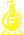 | bright yellow | kind 2: the refuel pick-up, straight up | 12 | A flask (graphic $0D, frame 0) |
| 1 | bright cyan | nothing | 9 | A pedestal (graphic $0D, frame 1) | |
| 2 | bright white | nothing | 33 | A craft in a cloud (graphic $0D, frame 2) | |
| 3 | 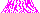 | bright magenta | kind 1: bullets; one in eight the shield ring, and now and then an extra life | 6 | A spiky mound (graphic $0D, frame 3) |
| 4 | 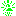 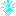 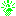 | bright cyan and bright green, flashing | kind 6: a spray, downwards from high up | 48 | A lamp; A lamp, second frame (graphic $1B, animated) |
| 5 |  | bright white and bright cyan, flashing | kind 4: a spray upwards | 23 | A domed robot; A domed robot, second frame (graphic $1B, animated) |
| 6 | bright cyan | nothing | 18 | A small craft (graphic $0D, frame 6): a generator of the flickering beams: destroying it with the special beam switches off the beams in its row and half of the world (beam_hits_ground_object, map_square_bit) | |
| 7 | bright cyan | nothing | 18 | A small craft (graphic $0D, frame 7): a generator of the flickering beams, as kind 6 | |
| 8 | 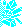 | bright cyan | nothing | 9 | More debris (graphic $0D, frame 8): an ore deposit: one unit to the tank (load_ore) |
| 9 | 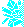 | bright cyan | nothing | 5 | A heap of debris (graphic $0D, frame 9): an ore deposit: one unit |
| 10 | bright cyan | nothing | 10 | More debris (graphic $0D, frame 10): an ore deposit: two units | |
| 11 | bright white | nothing | 14 | A ringed planet (graphic $0D, frame 11): the one kind the special beam passes over (beam_hits_ground_object) | |
| 12 | 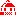 | bright red | kind 5: the fuel thief, sprayed upwards | 10 | A domed robot; A domed robot, second frame (graphic $1B, animated) |
| 13 | 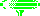 | bright green | kind 3: pellets, straight down | 22 | A craft hanging from a pylon (graphic $0D, frame 13) |
| 14 | 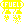 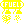 | bright yellow | nothing | 18 | A fuel station; A fuel station, second frame (graphic $1B, animated): the refuel pad: fills the tank and repairs the ship (ship_hits_ground_objects) |
| 15 | bright white | nothing | 20 | A craft hanging from a pylon (graphic $0D, frame 15) | |
| 16 | 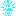 | bright cyan | nothing | 15 | A lamp; A lamp, second frame (graphic $1B, animated) |
Not sky objects, but numbers in the same graphic table, given to the records of the shots, the stars, the ship's jets and trail, and the things on the ground. The trail's, the stars' and the jets' words point at a graphic, not a list.
| Graphic | Pictures | What it is | ||||||
|---|---|---|---|---|---|---|---|---|
| $00 |
| the homing missile, by its facing (update_missile) | ||||||
| $01-$06 |
| the ship's trail, bending with its speed across (draw_trail) | ||||||
| $07-$0B |
| the stars of the three layers, at an even or odd x (draw_stars) | ||||||
| $0C | 11 frames from addon_graphics | an add-on lying on the planet: its frame is the add-on less one (see the add-ons) | ||||||
| $0D | 16 frames from type0d_graphics | a ground object: its frame is its kind (below) | ||||||
| $0E-$10 |
| the side jet's three flickering frames (side_jet) | ||||||
| $11-$12 |
| the lift jet: $12, or $11 while thrusting (lift_jet) |